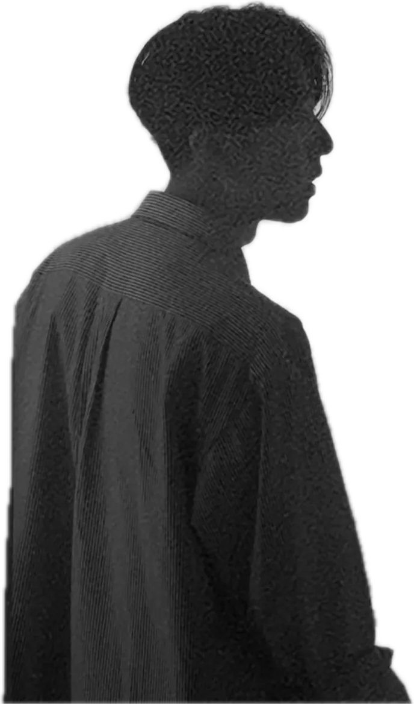

Dongwon Nam

CREATIVESTUDIO
Un studio créatif basé à Séoul, qui chronique films, expositions et livres, et écrit des poèmes.
Profil
About Me
Né à Séoul à l’hiver 1995. Il a commencé à publier en 2026 avec son premier recueil de poèmes.
- 1995Naît à Séoul, en hiver
- 2013Commence à tenir un journal de cinéma
- 2023Commence à tenir un journal d’expositions
- 2024Commence à étudier l’art
- 2026Recueil Ouvre la porte, sors, et tout est plein d’êtres vivants
- 2026Chaîne YouTube « Beau Nam »
- 2026Site web namdongwon.com
MaintenantMis à jour le 25 octobre 2026
- En montage
- Film All About Lily Chou-Chou — le premier épisode de « Beau Nam »
1,117films consignés depuis 2013 · 24 cette année
438expositions consignées depuis 2023 · 85 cette année